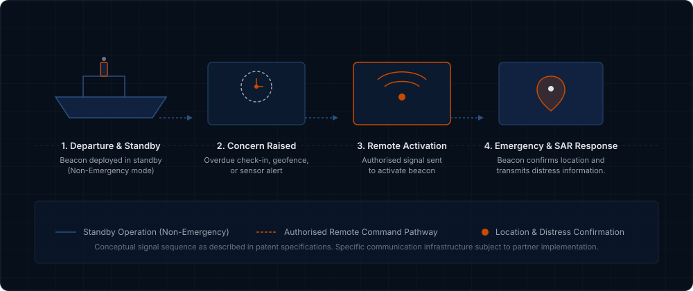

When the person in danger can’t press the button, who activates the beacon?
RALA-EPIRB is a patented emergency beacon concept enabling authorised remote activation when a person in distress is unable to activate the beacon themselves.
RALA-EPIRB · Remotely Activatable & Location Aware Emergency Position-Indicating Radio Beacon
Emergency beacons when manual activation is impossible
Conventional emergency beacons generally depend on manual activation or particular automatic triggers such as immersion or impact. These methods may not activate a beacon in every emergency scenario.
If a carrier is unconscious, injured, trapped, or incapacitated before reaching their beacon, conventional emergency signalling may not initiate.
The RALA Solution
The RALA-EPIRB system conceptualises an emergency beacon capable of being remotely switched from a standby state (Non-Emergency Mode) to distress transmission (Emergency Mode) by authorised personnel when a person is unable to activate the beacon themselves.
The beacon is also designed to receive welfare-check communications and transmit location confirmation while maintaining low-power operation.
How the system works
The patent portfolio describes a remote state-change mechanism from standby to active emergency mode.

Capabilities Described in the Patent Portfolio
The RALA-EPIRB patent portfolio details specific system mechanisms intended to improve search-and-rescue response and beacon management.
1. Authorised Remote Activation
Enables authorised emergency response centres or search-and-rescue personnel to remotely switch a beacon from Non-Emergency Mode into Emergency Mode when a carrier is incapacitated or unresponsive.
2. Welfare-Check & Standby Communication
Supports receiving "Are You Okay?" welfare-check queries and status signalling while the device remains in a low-power standby state prior to full emergency activation.
3. Conditional & Sensor-Based Activation
Describes automatic mode switching triggered by predefined conditions, such as crossing a configured geofence perimeter or receiving input from external sensors (e.g., man-down detectors).
4. Beacon Management & False-Alert Reduction
Includes mechanisms for remote or automated deactivation of expired or malfunctioning beacons to help reduce false alerts that consume rescue resources.
Potential Applications Include:
Note: Descriptions above refer to capabilities specified in published patent documents. Potential applications represent prospective integration opportunities for equipment manufacturers and do not imply that commercial products have been manufactured, certified, or deployed.
Patent Portfolio
The RALA-EPIRB innovation is protected across key international jurisdictions under the title "Emergency radio beacon remote activation system."
| Patent Number | Jurisdiction | Title / Description | Status | Public Record |
|---|---|---|---|---|
| US 11,733,339 | United States | Emergency radio beacon remote activation system | Granted | View Record ↗ |
| US 12,099,108 | United States | Emergency radio beacon remote activation system | Granted | View Record ↗ |
| EP 3,698,159 | Europe (EPO) | Emergency radio beacon remote activation system | Granted | View Record ↗ |
| AU 2018352466 | Australia | Emergency radio beacon remote activation system | Granted | View Record ↗ |
| AU 2024203537 | Australia | Patent application | Patent application | — |
| NZ 763832 | New Zealand | Patent application | Patent application | — |
The technology was developed by the inventors named in the patent portfolio: Doriette Fransien Harvey and Frederick Harvey.
Licensing Enquiry
Contact us to discuss licensing, commercial development or access to further technical information.
We welcome direct enquiries from emergency beacon manufacturers, marine and aviation safety equipment companies, defence suppliers, and commercialisation partners.
Direct Contact: Enquiries may also be sent directly by email to:
info@rala-epirb.com